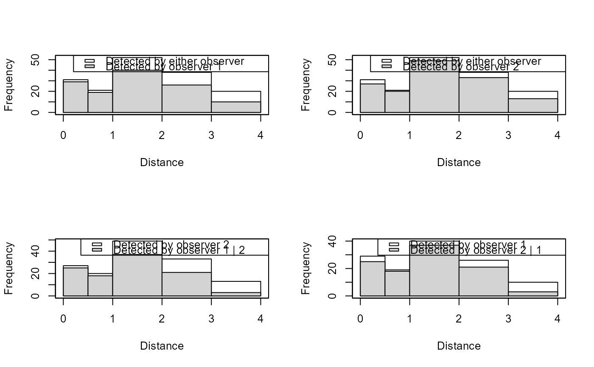

Creates a series of tables for dual observer data that shows the number missed and detected for each observer within defined distance classes.
Value
list object of class "det.tables"
- Observer1
table for observer 1
- Observer2
table for observer 2
- Duplicates
histogram counts for duplicates
- Pooled
histogram counts for all observations by either observer
- Obs1_2
table for observer 1 within subset seen by observer 2
- Obs2_1
table for observer 2 within subset seen by observer 1
Examples
# \donttest{
data(book.tee.data)
region <- book.tee.data$book.tee.region
egdata <- book.tee.data$book.tee.dataframe
samples <- book.tee.data$book.tee.samples
obs <- book.tee.data$book.tee.obs
xx <- ddf(mrmodel=~glm(formula=~distance*observer),
dsmodel=~mcds(key="hn", formula=~sex),
data=egdata, method="io", meta.data=list(width=4))
tabs <- det.tables(xx, breaks=c(0, 0.5, 1, 2, 3, 4))
par(mfrow=c(2, 2))
plot(tabs, new=FALSE, which=c(1, 2, 5, 6))

# }